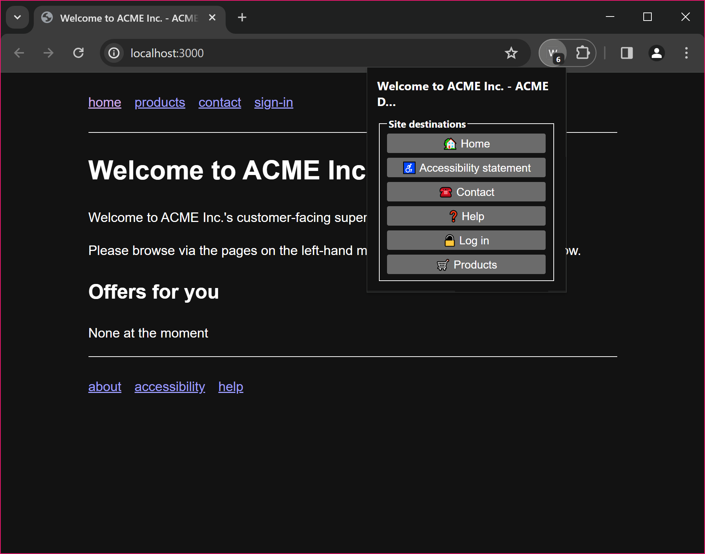

This document describes an approach that content authors can use to provide improved ease of navigation to website visitors, particularly those facing accessibility barriers. It introduces the concept of "Discoverable Destinations", which are standardized machine readable names for common page types that User Agents can query to present navigation options in an accessible and consistent manner.
The approach uses HTML <link> elements with standardized rel attribute values to signpost common destinations such as help pages, accessibility statements, and login pages. This enables User Agents, assistive technologies, and AI agents to reliably discover and navigate to these destinations across different websites.
Web sites can contain a huge array of varied and engaging content. This content, and the means of navigating around it, can be presented in almost any way, which makes for tailored and compelling experiences. However, whilst there are several conventions when it comes to navigation, this variability can pose challenges to certain people, and user agents acting on their behalf.
This best practices document aims to address the challenge of making sites more easily navigable for both people (particularly those facing accessibility barriers) and machines. It does this by standardising machine-readable names for common page types. User Agents can then query as to which destinations are supported on a given site (or page of that site), and present this information in an appropriate way for the user.
The User Agent, or a User Agent extension, could provide an interface to allow the user to: view supported common pages using a method, and terminology, that is clear to them; and to request to visit common destination pages directly.
Supporting people facing cognitive accessibility barriers in navigating sites.
This includes mechanisms that can support clear signposting within a User Agent to "standard" or "common" areas of sites that users wish to visit, such as "log in", "products", or the site's accessibility statement.
This also includes supporting users and accessibility auditors in quickly discovering the accessibility statement for a site.
Allowing UAs, or other machines, acting on behalf of users to also find common areas of sites.
Specifying the contents of well-known pages, nor the schema of any data to be found in one of the common areas of the site, when they are accessed by machines.
Specifying the way in which supported well-known pages are displayed to the user.
Specifying the interface within the UA (or UA extension) by which the user can navigate to supported well-known pages.
Though detailed UI design is out of scope, a proof of concept user interface for enumerating a site's discoverable destinations is shown below.

Our proposed "discoverable destinations" come from work done by the Cognitive and Learning Disabilities Accessibility Task Force.
This is not a complete list. We are consulting with COGA to update the destinations that the WAI-Adapt TF inherited from COGA.
An illustrative set of proposed discoverable destinations is as follows.
accessibility-statement (for the site's accessibility
statement)
change-password (as per A Well-known URL for
Changing Passwords)
help (for the site's main help landing
page)
log-in
products (for the site's main product section's
landing page)
search (intended for a dedicated search page; a search
landmark region would be used on any page that contains a search
form)
The following use cases illustrate the kinds of navigation challenges that Discoverable Destinations are intended to address.
An accessibility auditor is reviewing a portfolio of websites on behalf of a disability rights organization. Each site structures its accessibility statement differently, some link to it from the footer, others from the main navigation, and others only from an internal policy page. The auditor spends considerable time on each site searching for the relevant page before the audit can begin.
With Discoverable Destinations, a User Agent or assistive technology can immediately locate the accessibility-statement destination on any compliant site and present a direct link to the auditor, regardless of where the site has chosen to place it in its navigation structure.
A user with a cognitive disability wants to log in to their account on a retail website. The site's primary navigation does not label the login entry point in a way the user recognises, and the page layout makes it difficult to locate. The user's browser extension, which presents a simplified navigation panel, cannot automatically locate the login page because no standard signposting exists.
With Discoverable Destinations, the browser extension can read the log-in destination from the page's <head> and present a clearly labelled button in its simplified interface, giving the user a direct and reliable path to the page they need.
A user with motor impairments uses an AI-powered assistive agent to help navigate websites and complete common tasks. The user asks the agent to "find the help page for my internet provider." Without semantic signposting, the agent must attempt to locate the help page by guessing at URL structures or parsing navigation HTML, which is brittle and may fail when the site is updated.
With Discoverable Destinations, the agent can query the help destination directly from the site's page headers, retrieve the correct URL in a single step, and navigate the user there reliably, regardless of how the site has structured its navigation menus.
A password manager application wants to help users navigate directly to the password change page on any website, consistent with the Well-Known URL for Changing Passwords specification. On many sites, the password change page is buried several levels deep within account settings, and its location varies across sites.
With Discoverable Destinations, the password manager can use the change-password destination to locate the correct page directly, without the need for site-specific integration or manual maintenance of URL mappings.
Any approach that addresses these user needs must provide the following.
A way to represent each discoverable destination proposed above.
A mechanism for discovering all discoverable destinations supported by a site. This mechanism is to be used when a UA first visits a site on behalf of the user. In order to do this efficiently, it must be possible to make this query in a single HTTP request. The results would be available to the user via the UI of the UA.
A way to denote the scope of any particular site (or sub-site).
A procedure for visiting a discoverable destination directly (when the user activates the interface in the UA).
A mechanism by which a discoverable destination would be updated (by the content author).
Means to identify when a link on a page takes the user to a sub-page of a discoverable destination page. E.g. a link to the "help on logging in" page (as opposed to the main "help" section landing page, which is where the discoverable destination alone would take the user).
Means to demarcate an element on the destination page that provides the destination content.
A way to indicate the kind of content that the destination provides. For example, people with cognitive disabilities may need to get help from, or chat to, a human, over the phone, rather than a chatbot, or sending an email.
The last of these requirements, indicating the kind of content or support, is currently an open question, not addressed by the proposed approach below, but may be addressed in a future iteration of this approach, or by a future WAI-Adapt TF project.
This involves using the <link> element, and custom
rel attribute values, to signpost discoverable destinations
on a site.
All possible discoverable destinations will be registered as
rel attribute values.
accessibility-statement
change-password
help
log-in
products
search
On the site's home page, the destinations supported by the site would
be indicated via <link> elements. For example:
This will provide an overview of the available destinations.
All destinations need to be repeated on all pages of the site.
(This is one reason why the URLs in the example begin with
/).
Because all destinations are repeated on all pages of a site, if we move to a sub-site, the sub-site will expose all destinations on all of its pages, and thus the UA/AT will be able to present the correct destinations for the sub-site.
The user selects the discoverable destination in the UI of their UA.
The corresponding URL is loaded.
The content author would need to ensure that the
<link> elements sent are correct. In practice this
would most likely be managed by the CMS powering the site, which could
take the repetition out of the authoring process.
When an in-page (anchor, <a>) link points to a
page that is a sub-page of a discoverable destination (such as the "help
on logging in" page, rather than the "help" home page), this can be
indicated by adding a rel value to the anchor.
As discoverable destinations are normal links, they can make use of fragments to point to certain elements on the destination page.
In addition to fragment identifiers, ARIA landmark roles provide a complementary mechanism for both identifying and navigating to content on a destination page. In particular, the <main> element (or role="main") demarcates the principal content of the page. When a discoverable destination link does not include a fragment identifier, User Agents and assistive technologies should treat the <main> element as the default content boundary for the destination. Content authors are encouraged to ensure that destination pages use the <main> element to wrap their primary destination content.
Landmarks also support navigation within a page. A destination page may contain multiple labelled region landmarks, each representing a distinct content area. User Agents and assistive technologies can enumerate these landmarks and present them to the user, or navigate directly to a specific region. For example, a help destination page with regions labelled "Getting Started", "Account Settings", and "Billing Support" would allow the user or their agent to jump directly to the relevant section.
The content/UA/AT can then use this information (and the knowledge that the navigation was via the Discoverable Destination UI) to render the destination page in an appropriate way for the user. This may involve:
Highlighting the specific relevant part of the page.
Removing other elements from the rendering of the page to reduce cognitive load.
Providing additional context or guidance based on the destination type.
The current approach identifies where a destination is located but does not convey what kind of support or content it provides. This distinction is important for users with cognitive disabilities who may require a specific mode of interaction. For example, a user may need to speak to a human being over the phone rather than engage with a chatbot or submit a form by email.
Several possible approaches are under consideration:
Extending the rel value vocabulary to include more specific destination subtypes (for example, help-human or help-chat). This approach is specific and directly discoverable by User Agents, but risks becoming unwieldy as the number of content kinds grows.
Using an additional attribute or a companion <meta> element alongside the <link> element to annotate the kind of support offered, keeping the destination identifier stable.
Deferring this concern to the destination page itself, where structured data markup could describe the available support types. This places the burden on page authors and requires User Agents to fetch and parse the destination page before presenting options to the user.
We still need to find reasonable resolution for above problem. We may also delay the resolution till next iteration
The current approach requires all <link> destination elements to be repeated in the <head> of every page on the site. This has the advantage of simplicity, a User Agent can read the available destinations from the current page without making any additional HTTP requests. However, it introduces authoring overhead and requires every page to be updated whenever a destination URL changes.
The Task Force has agreed to adopt the <link> element approach for the first iteration of this specification. This decision reflects that the approach has a low entry barrier, as it builds on existing, well-understood HTML mechanisms that content authors and User Agents already support, requires no new infrastructure, and can be incrementally adopted. The per-page repetition, while an authoring overhead, can be managed in practice through CMS templates.
The following questions remain open for future iterations:
Should there be a single canonical discovery endpoint, such as a well-known URI, that a User Agent can consult once per origin rather than reading destinations from each individual page? This would reduce per-page overhead but would require an additional HTTP request on first visit to a site.
If a centralized endpoint is provided, how should per-page and per-origin destination declarations be reconciled when they differ? For instance, a sub-site may legitimately need to override destinations declared at the root level.
What caching expectations should apply to destination declarations, both in the per-page <link> approach and in any centralized discovery document?
The Linksets format offers one possible path toward centralized discovery and may be revisited in a subsequent iteration.
A site hosted at a single origin may contain functionally distinct sub-sites. For example, a hotel website might host a main booking section, a restaurant section, and a gym section, each with its own set of relevant destinations.
The <link> element approach handles this naturally. Because every page carries its own <link> declarations, each sub-site simply includes the destinations relevant to that sub-site on its pages. The User Agent always reads the destinations from the current page, so:
Scope is implicit and automatic. When the user is on a restaurant sub-site page, that page's <link> elements define the applicable destinations. No boundary detection or URL prefix matching is required.
Overriding destinations is straightforward. A sub-site page that declares a different contact destination than the root site will naturally present the sub-site's destination to the User Agent, since the User Agent always uses the current page's declarations.
No additional authoring mechanism is needed. Content authors control sub-site scoping by controlling which <link> elements appear on each set of pages, typically managed through their CMS templates.
The Task Force considers sub-site demarcation to be resolved by the per-page <link> approach.
Agentic AI systems are autonomous software agents that can plan, reason, and execute complex tasks on behalf of users. These systems represent a significant development in automation, capable of understanding natural language requests and breaking them down into actionable steps. For users with disabilities, these AI agents can serve as powerful assistive technologies, helping navigate digital environments and complete tasks that might otherwise be challenging.
Discoverable Destinations were designed to help humans with accessibility needs find important pages quickly. This same semantic approach also serves AI agents acting as assistive technologies. What helps humans with disabilities navigate also enables machines to provide consistent assistance.
The semantic identifiers provided by Discoverable Destinations work consistently across all compliant websites. Rather than AI agents searching for contact information using fragile selectors such as "find the element with class .contact-info", they can use semantic identifiers to navigate to the contact destination. This approach transforms brittle technical navigation into reliable semantic discovery.
Discoverable Destinations address inter-page navigation: finding and reaching the right page on a site. Users sometimes also need to reach a specific section within a destination page. For example: "take me to the account management section of the help page."
For content extraction tasks, where an AI agent retrieves information from a destination page on the user's behalf, ARIA landmarks are not essential. LLMs are capable of processing full page content and extracting relevant information from raw HTML. Using the <main> element (or role="main") to filter out navigation bars, footers, and advertisements before passing content to the LLM can reduce noise and token cost, but this is a practical optimisation, not a requirement.
For intra-page navigation tasks, where the user asks to be taken to a specific section of a page, ARIA landmarks are genuinely valuable. The AI agent can understand where a section is in the HTML, but it cannot scroll or focus the user's browser to that section without a concrete DOM target. Labelled region landmarks provide exactly this: standardised, semantic anchors that a tool can use to navigate the user's view to the right part of the page.
For example, if a user asks to be taken to "account management help" and the help destination page contains labelled regions for "Getting Started", "Account Management", and "Billing Support", the AI agent first discovers the available landmark labels on the page, identifies the best match for the user's request, and then directs the tool to scroll the user's browser to the "Account Management" region. This is primarily relevant in browser-based integration models where the tool has direct access to the page DOM. In a server-side model, intra-page navigation is not applicable since there is no browser to control.
The navigation landmark can also help agents discover secondary navigation paths on a page, revealing links the agent can follow on the user's behalf.
Content authors are encouraged to use the <main> element to wrap primary destination content, and to label distinct content regions with region landmarks. This benefits both human users of assistive technologies and AI agents acting on their behalf.
The following examples illustrate how AI agents might use Discoverable Destinations to assist users with disabilities:
An accessibility compliance assistant could help a disability rights advocate check accessibility statements across multiple partner websites. The AI agent would systematically discover and analyse accessibility-statement destinations across all sites, ensuring comprehensive accessibility monitoring without the need for manual navigation.
A cognitive support assistant could help a user with cognitive disabilities who is facing issues with multiple service providers. The AI agent would discover contact and help destinations across different platforms, presenting a comprehensive support landscape in a simplified, consistent format.
A motor accessibility aid could assist a user with motor impairments who wishes to update their profile information across platforms but finds repeated navigation challenging. The AI agent would navigate to relevant destinations on each site, then guide the user through the updates with full context and control, reducing the physical navigation burden.
These scenarios share a common pattern: AI agents handle the discovery and navigation complexity, while humans maintain control over sensitive decisions and actions.
Discoverable Destinations are well suited for content discovery, such as finding specific types of pages including help, contact, and accessibility statements. They also support information extraction from destination pages and provide consistent navigation patterns across different websites.
However, certain tasks require additional solutions beyond Discoverable Destinations:
Complex actions involving workflows such as password changes, account modifications, or transaction processing may vary dramatically between sites. Discoverable Destinations can navigate to relevant areas, but the actual workflows may require additional tools or human involvement.
Authenticated operations requiring user specific authentication and authorisation need specialised protocols and often human involvement for security.
For complex scenarios, a layered approach works best: Discoverable Destinations provide navigation to relevant areas, APIs are used where available for sensitive operations, and human oversight is included for sensitive or complex tasks.
AI agents can integrate with Discoverable Destinations through various architectural patterns. Two primary models are relevant for deploying tools that leverage semantic destinations:
A server side model where tools run independently of the user's browser and make direct HTTP requests to target websites. This approach is suitable for public data retrieval but has no access to the user's browser session or authentication state.
A browser based model, such as WebMCP, where the web page itself can expose tools to AI agents. This approach operates within the user's existing session with full access to authentication state and page context, making it better suited for authenticated operations and personalised content.
The choice of integration pattern depends on the specific use case. For scenarios involving authenticated operations, personalised content, or complex user specific workflows, a browser based approach is recommended. For public data scenarios, a server side approach may be sufficient.
The set of standardised destination types may evolve over time as new common navigation patterns emerge and as new user needs are identified. The current set of destinations reflects the priorities identified by the COGA TF at the time of publication, but it is not exhaustive.
Parties interested in proposing additional destination types should consider the following criteria:
The proposed destination type should address a common navigation need that is shared across many websites, not a need specific to a particular industry or platform.
The destination type should provide clear accessibility benefits, particularly for users facing cognitive accessibility barriers.
The destination type should be sufficiently general to apply across different industries and website types. Where a need is specific to a particular domain, it may be more appropriate to address it through domain-specific conventions rather than a standardised destination type.
The destination type should not duplicate an existing destination type or overlap significantly with one already in the standard.
The formal governance process for proposing, reviewing, and adding new destination types to the standard is under development. Interested parties are encouraged to raise proposals as issues in the WAI-Adapt GitHub repository for discussion by the Task Force.
For agentic AI use cases specifically, additional destination types may be beneficial in contexts where AI agents need reliable access to common site areas that are not yet covered by the current set. For example, account settings pages and accessibility preference pages. Proposals for such additions should follow the criteria above and be raised with the Task Force for review.
The Discoverable Destinations approach has been designed with privacy and security in mind.
Discoverable Destinations use standard HTML <link> elements that are already part of web pages. No additional user data is collected or transmitted beyond normal web browsing. The approach does not introduce any new tracking mechanisms, as User Agents discover destinations by parsing existing page content. Users retain full control over when and how they navigate to discovered destinations through the User Agent interface.
A User Agent that exposes a destination list to the user reveals which discoverable destinations a site supports. Since this information is already present in the page's <head> and therefore visible to any party that loads the page, no new information is disclosed by processing or presenting it.
All navigation uses standard HTTP and HTTPS requests subject to normal browser security policies. Destinations are typically within the same origin, which reduces cross-origin security concerns. Content authors are responsible for ensuring that the href values in their <link> elements point to legitimate, secure pages under their control.
User Agents and extensions that implement a discoverable destination interface should validate that destination URLs share the same origin as the page from which they were discovered. Where a cross-origin destination URL is present, User Agents should present the full URL to the user before navigating, to support informed decision-making.
When AI agents use Discoverable Destinations on behalf of users, the same privacy and security considerations apply as for human users. Additionally, agents should not aggregate or store destination metadata in ways that could be used to profile users' browsing patterns across sites. For sensitive operations such as authentication or account changes, human oversight should be maintained. Discoverable Destinations are designed for navigation and content discovery, not for executing complex authenticated operations. The primary approach for sensitive operations should be human-in-the-loop, where AI agents navigate to relevant pages using semantic destinations, extract and present available options to users, then hand control to humans for actual execution.